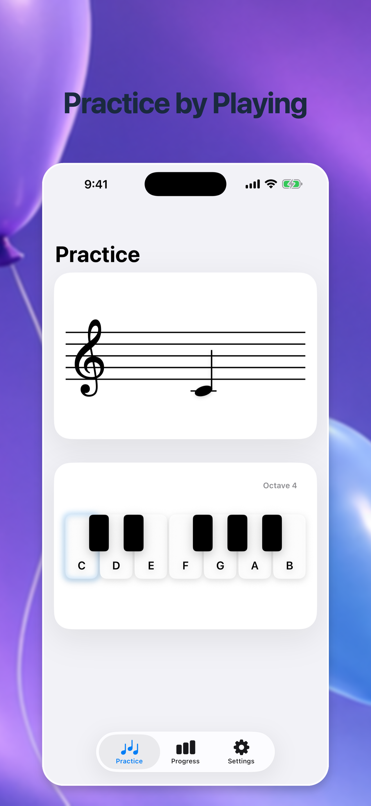
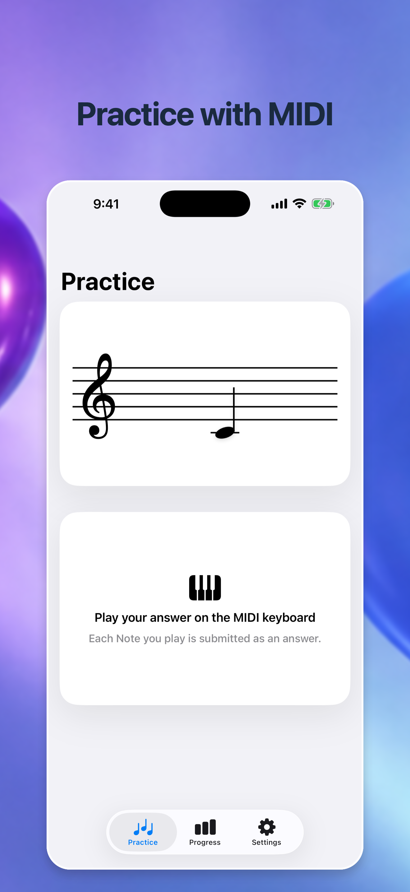
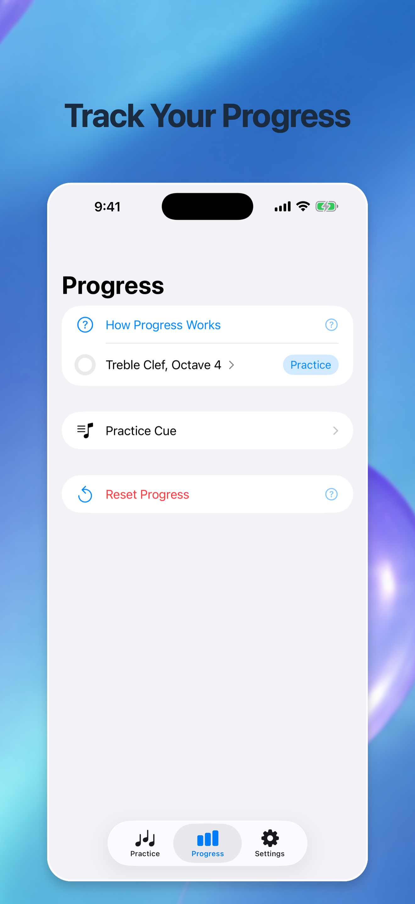

Practice your way
Everything you need to make notes feel natural.
Practice with Staff Cues, Cue Sounds, or both, then answer on the On-Screen Piano Keyboard.
Piano Notes Practice
Learn piano notes with Staff Cues, sound, an On-Screen Piano Keyboard, or your compatible USB MIDI instrument.
Free and open-source. No ads. No subscriptions.

Practice your way
Practice with Staff Cues, Cue Sounds, or both, then answer on the On-Screen Piano Keyboard.
USB MIDI
Connect a compatible MIDI keyboard or digital piano and answer naturally.

Adaptive Practice
See every Note by Clef and Octave. Adaptive Cues focus Practice where it helps most.

Designed for privacy
Everything is stored on your device. No account, advertising, analytics, or network connection is required.